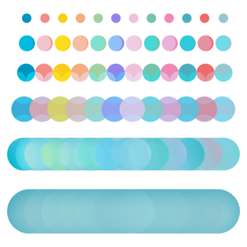

Mit der Academy erhaltet ihr im Business-Plan praxisnahe Lernmodule rund um Facilitation und wirksame Transformation.
Gemeinsam mit 9 Spaces zeigt Plan International Deutschland, wie wertebasiertes Arbeiten Orientierung gibt – nach innen wie nach außen.

Dieses Tool hilft dir dabei, ein Leben lang zu lernen – und zwar die Dinge, die dich wirklich interessieren.
Mindestens einmal am Tag solltest du dir Zeit für deine Ziele und Bedürfnisse nehmen. Mit diesem Tool baust du dir eine Routine, die funktioniert.
Ein Tool, das dir dabei hilft, dein Selbstmitgefühl zu stärken und konstruktiv mit Fehlern umzugehen.
Mehrdeutige, komplexe und ungewisse Situationen gehören zum Leben dazu. Dieses Tool hilft dir dabei, deine Reaktionen zu reflektieren, um einen selbstbestimmteren Umgang mit ihnen zu finden.